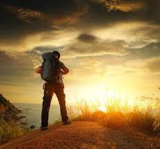
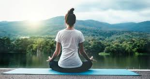
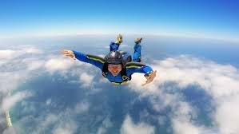

New activities to do
There are many activites that you can do to get rid of anxiety and depression to motivate you and make you braver. Also discoviring new hobbies and working on them hard is a fantastic thing.
Some of activities you can try!
- traveling 
- yoga/medetation 
- new sports

- hiking/sky diving 
traveling:
Travelling means going from one place to another in different purposes. They also explore to see the unseen and know the unknown. The travellers always travel the most beautiful places of the world which uphold the existence of nature. All things are created by Allah. There are many means to see the unseen and know the unknown, but travelling is the best of all.
yoga/medetation:
Yoga also helps maintain one’s youth and vitality. Yoga exercises help to control, purify and coordinate the nervous system.Meditation is a mental discipline by which one tries to attain a deeper state of relaxation or awareness. It involves focusing one’s attention on a single point of reference.
sports
Sports is a very important thing in human life, it maintains the physical and psychological health , and here you will find a Short paragraph about sport contains everything you need to know about sports
hiking/ skydiving
Hiking is a general word for traveling on foot in wilderness or countryside. ... Sometimes large groups hike together. Hiking is a kind of physical activity as well as a leisure activity (a way of spending free time).Also,Skydiving can be an exciting sport. Skydiving includes free falling (usually from an aeroplane) through the air prior to opening a parachute